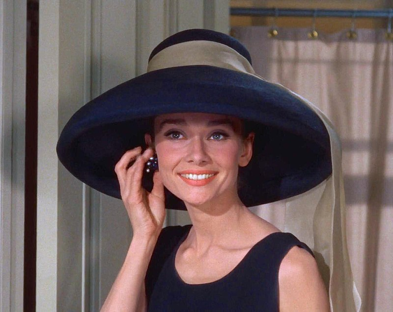

Hey there! Welcome to my website. As you
already noticed, it reflects the huge interest in hats. Click the hat icons above to explore more!
Please enjoy your stay here ❤
Evolution of Hats
The woman's hat may have its origin with a turbanlike head wrap or pointed cap as documented in Neolithic
cave paintings at Tassili, Algeria (c. 8000-4000 B.C.E.) and later Mesopotamian sculptures (c. 2600 B.C.E.)
Evidence for a variety of shaped hats comes from Crete (c. 1600 B.C.E.) via polychrome terra-cotta female
figures wearing several types: the high sugarloaf style, the flat beret, and the tricorne with rosettes,
curled plumes or ribbon decorations, which may have association with fertility rituals.1
Mob Caps
Mrs.Bennet with her mobcap inPride and Prejudice, 1995In the middle to late 18th century in England during the Georgian Period, married women wore head
coverings called mob caps.
In colonial America, mob caps were worn by all women, but the aristocratic versions were sometimes pleated and
included bows. By the 19th century, mob caps were mainly worn by servants and the working classes. During the
French Revolution, the poorer class women were often seen rioting in the streets in these fittingly-named
"mob" caps.
The simple gathered versions of this cap are still routinely worn in food service, factories, and hospitals by
both men and women. 2In the late 19th century, Art Nouveau influenced the hats of the Edwardian era with wider brims
that balanced both the fuller pompadour hairstyles and the flowing skirts. Hats were decorated with floral
accents, rosettes and tulle. This style evolved into the Merry Widow look of the wide-brimmed black, plumed
hat with a chiffon over-wrap. We can see fine examples of the Edwardian styles in the movie,Titanic.3
WWI–Depression
Cloche hats in the period movie The Great Gatsby, 2013In the 1910s and 1920s as the hairstyles became shorter, hats sat closer to the head. Turbans and
cloches were popular—often accentuated with feathers and jewels. The curved plumes from pheasants and other
birds were called "Mephisto feathers" and were commonly used on the toque hats of the art-deco period. These
hats took on taller profiles to compliment the high-collared fashions of 1915.4
During World War I, military styles influenced millinery designs. Black veils were added for
feminine appeal. Although these hats started out as mourning attire, this close-sitting, black-netted hat
design lasted for 25 years. During war time, when large wedding ceremonies were impractical or too
expensive,
many women opted for a tailored suit or modest dress with a nice hat instead of a bridal gown. Hats were
worn
along with gloves whenever women went out to socialize or to attend church.5
1960s–1990--

Audrey Hepburn wearing a floopy hat in Breakfast at Tiffany's, 1961The wider brimmed, floppy hats soon followed in the late '60s and '70s and are associated with
hippie or boho fashion. By 1980, fashionable hats fell out of style for mainstream wear in the U.S. unless
they were needed for sun protection or special events like garden parties,the Kentucky Derby, and Easter6
Steampunk fashion returned with a vengeance in the '90s, hats included. It combines machinery and
fashion, making for some truly interesting clothing and accessories. Later, Trucker hats embellished with
rhinestones and designs were the cap of choice during the early 2000s.7
Known as worst years in fashion history :)